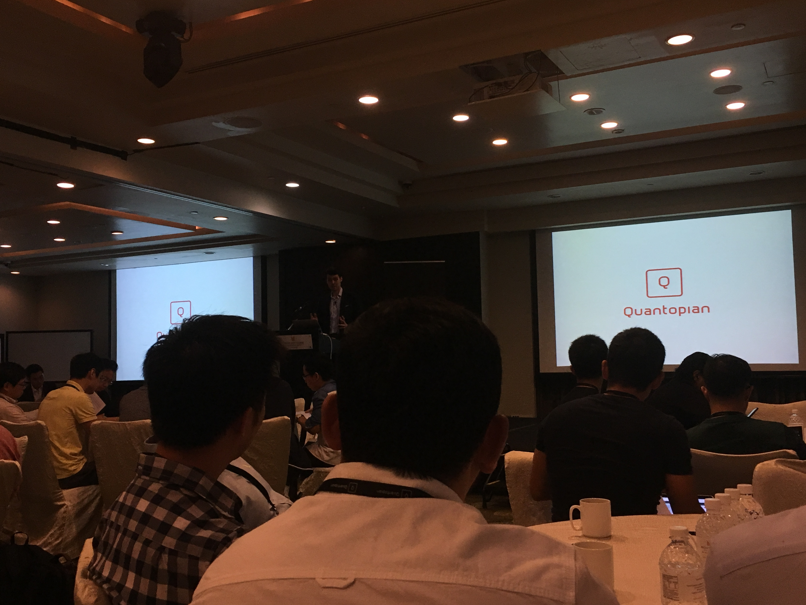
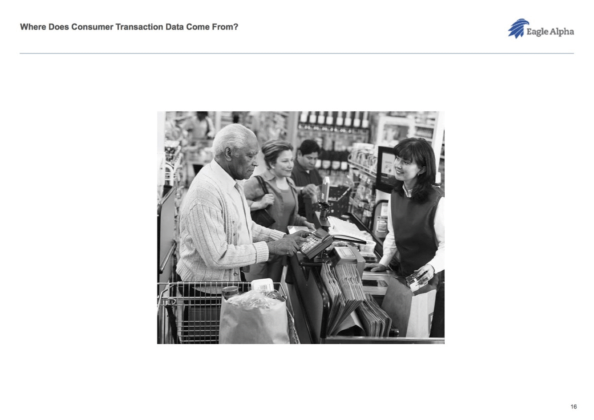
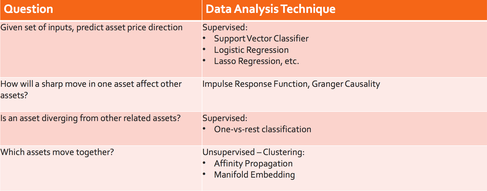
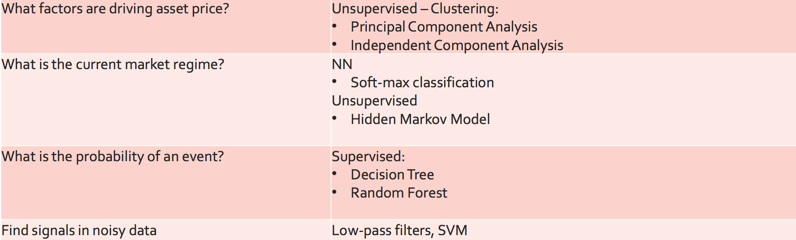
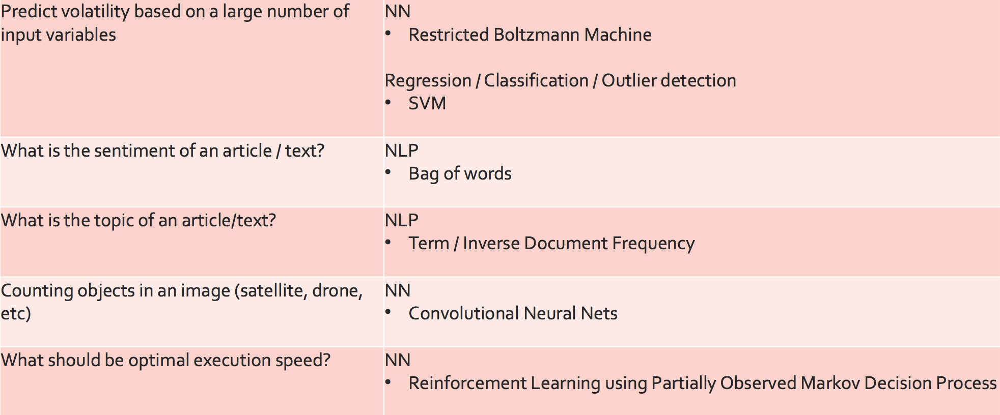
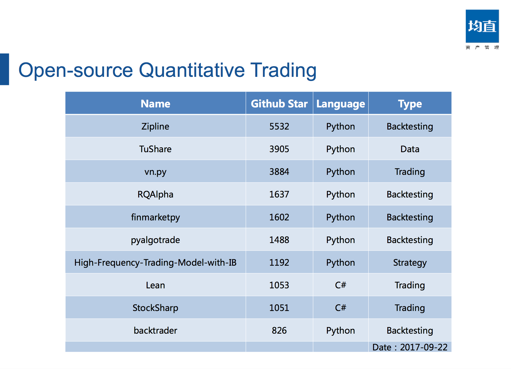
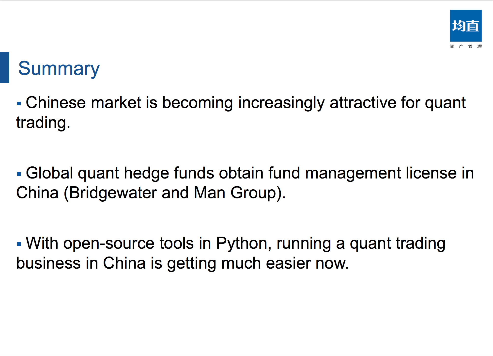
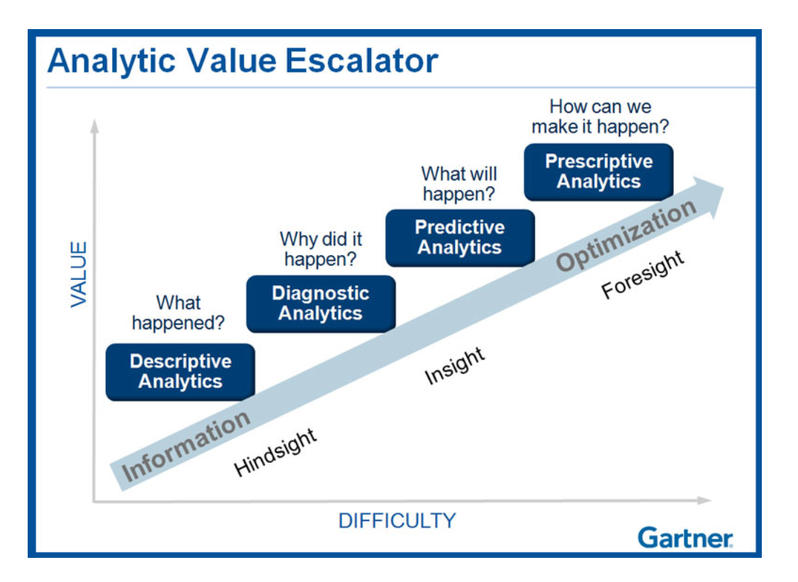

QuantCon@SG，你想知道的所有细节都在这里了
Quantopian2017年新加坡会议总结
本科的时候就听说XJC师兄想要从零开始搭建一套量化交易系统，当时也是特别佩服。虽然周围金工的同学或多或少也在用SAS然后连接Wind来开发与回测投资策略，少部分同学也试着实盘去操作，但真正从一砖一瓦去搭建整个量化交易系统就是另一回事了。 后来大概在我大四的时候，预测者网诞生了。一开始其核心在于抓取大V以及分析师们的预测观点并进行评级，之后逐步开始卖量化投资策略和高频数据。 之所以以这个引子开头，是为了契合Quantopian这次的量化投资大会。一来，随着2016年国内各大量化策略平台（RiceQuant, Uqer, JoinQuant, 果仁网）雨后春笋般的出现，人人皆为宽客的时代已然来临，预测者网虽然没有很快的转型，但也是这波浪潮的冲锋号。二来，alternative data近来也比较火，正如有着GIC九年工作经验的keynote主讲人Yi Li大神提到用分析师数据来预测宏观市场状态，预测者网也有试图整合所有分析师的预测观点来最大化集体智慧。三来，机器学习/人工智能也算是在各个行业都大放异彩，这次QuantCon有很多演讲都和机器学习、增强学习有关。另外，文末有福利放送哦~
QuantCon@SG

最早接触QuantCon是在2015年，当时Dr. Anthony NG在和Quantopian一起打算在新加坡筹办一次短期的workshp（Probabilistic Programming in Quantitative Finance）。但是觉得离学校太远，就懒得没去。再后来，和BL兄一起参加了WorldQuant的全球量化投资交易比赛（特别巧的是这次会议还碰到了新加坡WorldQuant的CEO，没想到他还记得我）。当时BL兄提到了16年首届新加坡QuantCon，觉得还不错。于是今年我就报了名，打算了解下业界目前的热点，顺便认识认识各种大神。
今年的会议分成了三个部分，先是28号的三场workshop（顺便推荐下Quantopian的Lecture，感觉比国内类似平台做的详细些），然后29号的正式会议，最后30号有个Hackathon。正式会议的议程安排还是蛮紧张的，总共两个主旨演讲，还有20个报告（具体细节请看最后一部分），覆盖了Quant职业生涯建议、机器学习、另类数据、投资组合优化、投资模型以及金融市场。总的来说，考虑到今年只是第二届，参会体验已经很不错了。另外QuantCon也有在纽约举办，YouTube上有2015、2016年的会议视频。
虽然是在新加坡的会议，但无论是报告人还是参与者，很多都是从海外专门打飞的过来。甚至碰到了和我同岁目前在北京做Quant的JCM同学，刚来新加坡不到一周的韩国大哥Harold，之前在读书会遇到的师弟SZH，以及专门从外蒙古飞过来的今年纽约Hackathon的冠军。正如一位报告人所讲，这么多人从五湖四海同聚一堂，短时间高密度的交流，确实是难得的机会。更何况量化投资本身就像武林秘籍一样，各家『流派』能够互相交流学习，更新信息，实属不易。虽然参会那一段时间睡眠不足，导致开会那天整个人昏昏沉沉的，感觉没有特别深刻的收获，但还是总结一二，以期日后有新的领悟。
见闻
寻找阿尔法
投资者把钱交给基金经理的唯一原因，是经理可以给予投资者比市场更好的回报。而这个更好的回报，我们就把它称之为超额回报，简称阿尔法。
Fama三因子模型提出股价会受到市场系统风险、市净率以及公司规模的影响，从此越来越多的因子模型被提出来来解释股价。据说WorldQuant内部就有很大的因子库，覆盖了流动性、动量、质量、市值、价值、波动性、成长性以及宏观状态各个方面。所以当大部分因子都为人所知的时候，下一步该怎么做？最直接的思路便是提出新的因子，而产生新因子的最直接办法就是用别人从来都没用过的数据（alternative data）。比如像下图，实际可以收集以及利用的数据有很多。

这次会议也有人问GIC目前为什么要用卫星数据，一个简单的场景就是通过卫星地图来探查某一个地方的石油产量或者矿产产量。通过分析拍照时太阳的位置，存储罐内外阴影大小及其地理位置来计算石油储存量。也可以分析港口物流的繁忙程度来提前预测宏观经济景气程度。

其实这个思路并不新，像谷歌很早就用搜索数据来预测流行病的爆发。但难点在于另类数据的获取，以及从中提取有用的因子出来。其中一位演讲者Emmett Kilduff创办了另类数据提供商公司Eagle Alpha，在其网站上有详细的白皮书。其实从本质上讲，投资就是利用信息不对称来获取收益，无论这种信息是靠才智或者内幕或者金钱获得的。但由此带来的问题是，如果alternative data变得普遍，容易获得了，实际也就没什么意义了。因此，另类数据提供商其实面临一个很艰难的抉择，如果定价高，那么客户少，但至少因子被少部分人使用，因而保持有效；但如果定价低，那么客户多，导致alternative data不那么另类，那么产品也就没什么价值了。所以这些另类数据提供商似乎得要像石油输出国组织一样，控制另类数据的释放，以保证其有效性。
机器学习
很多报告也提到了机器学习在量化投资中的应用，包括如何用深度增强学习来优化下单、实时投资情绪分析、策略参数优化、基于供应链网络扩散模型来预测上下游收益影响。主旨演讲Yi Li大神也是一位kaggler，这次的报告主要是讲用ensemble approach来预测宏观经济状态，并且减少高频和低频数据之间的鸿沟。虽然听部分朋友说目前机器学习在业界还处于研究阶段，甚至有些基金经理吐槽机器学习完全没用，但至少正如一位CIO所说，机器学习在量化投资界俨然是一种趋势。虽然个人觉得金融市场过于复杂，信噪比过低，而且一直在变化；但总归参与者要么是人，要么是机器，一定是有规律可寻的，只不过可能要从另一个层次或者角度上去看问题。下图中Dr. Anthony NG总结了各类机器学习方法适用的投资决策问题（或者反过来说），也可以关注下他的个人博客。



投资组合优化
听JCM同学说国内目前做投资组合优化的还比较少，可能会是一个好的方向，这次会议也有四个相关的报告。基本含义是马科维茨的均值方差模型虽然漂亮，但均值方差很难准确估计，其次高阶矩的信息有所损失。由此带来的方案是，如何构建更鲁棒的投资组合，如何利用整个分布信息来优化投资组合（Dr. Li Haksun基于此改进了夏普比率）。值得一提的是，Quantopian目前也提供了Optimization的API。
人人皆为宽客

这个其实也没什么好说的。现在国内各种量化交易平台，提供了数据、回测、研发、实盘交易一条龙服务。整个量化投资的门槛低了好多，只要会写python，很容易能设计一些[有效利用噪声的]策略。而且像vn.py, tushare, rqalpha, zipline这些开源工具，也极大方便了Quant们的二次开发。这里不得不吐槽，Quantopian的回测速度实在是太慢了（也有可能是调用了optimization api，并且第一次用Quantopian的平台，有很多东西还不太熟悉）。其实感觉这次WorldQuant的CEO来听报告，一个很重要的因素是这些平台和他们本身的websim平台有些重叠。
题外话
中国市场的机会
先放陈晓优大神的观点，在中国市场做量化交易未来很光明。虽然很多人觉得国内是政策市，而且监管严重，可交易品种不多。但与其忽视中国市场，不如去想如何利用这些特点来设计策略，当时陈总提到了幻方的一个策略，但现在有些记不大清了。另外，国内市场股票（3300只）、ETF（160只）、期权（1个股指、2个商品）、期货（43个商品、3个股指、2个债券）应有尽有，而且也可以做空。最关键的是，机构投资者相对较少，市场有效性还可以进一步提高。据说Citadel在中国曾经一个月的利润占了整个公司年利润的1/3，而且越来越多的HF也要进驻中国市场了。

机器学习，然后呢？

其实说白了，机器学习就是为了让我们更好的认识这个世界，而从数据中生成的模型。好的模型能够解释过去以及预测未来，但更进一步模型作为客观世界的替代，需要能够更好的优化我们的决策或者行为。这样的模型可以是基于数据提取（机器学习、统计模型），也可以基于假设进行仿真（系统动力学、离散事件仿真、multi-agent），但最终的落脚点都是在于优化我们的决策。这也是为什么我觉得深度增强学习（其实还应该把仿真加进去，无论是产生已有或者未知的数据）未来一定会有更广泛的应用。
竞争优势
想要在量化投资界存活，其实很简单。要么比别人聪明，要么比别人快，要么比别人敢作弊（并且不被发现）。后来听朋友说，这是大空头里面的话，感觉还要再看一遍回忆下。。总而言之，随大流就只能成为大流了。
存在是否存在
这正如地上的路；其实地上本没有路，走的人多了，也便成了路。
其实存在也分客观和主观。我感觉一个策略如果赚钱或者说有价值，要么是先于别人发现了客观存在的真理（比如某种规律、制度上的漏洞或者套利），要么是引导了主观的存在（比如各种虚拟货币、对敲、巴菲特这种大V）。但身在金融市场中，投资者受到金融市场这个存在的影响，同时其观测以及操作认为的存在会进一步导致金融市场的存在，这也就是索罗斯所说的反身性。
福利
以下是这次会议各个报告的slides，部分还是蛮有价值和启发的。
- Building a Career in Quant Finance
- “Quant Trading for a Living – Lessons from a Life in the Trenches” by Andreas F. Clenow, Chief Investment Officer for ACIES Asset Management
- “How to Run a Quantitative Trading Business in China with Python” by Xiaoyou Chen, Head of Option Trading at Shanghai Junzhi Asset Management Ltd.
- Machine Learning
- “Applied Reinforcement Learning in Trading Algorithms” by Pierre Maarek, Vice President, Linear Quantitative Research at J.P. Morgan
- “A Machine Learning Odyssey” by Anthony Ng, Senior Lecturer
- “Real-Time Machine Learning Architecture and Sentiment Analysis Applied to Finance” by Dr. Juan Cheng, Data Scientist at InfoTrie
- “Deep Reinforcement Learning for Optimal Order Placement in a Limit Order Book” by Ilija Ilievski, Ph.D. Candidate, NUS
- “Demonstration of Machine-Learning Based Strategy Parameter Selection in Python” by Dr. Thomas Starke, Quantitative Trader at Vivienne Court
- Alternative Data
- “Three-Dimensional Time: Working with Alternative Data” by Kathryn Glowinski, Engineer at Quantopian
- “Alpha from Alternative Data” by Emmett Kilduff, Founder and CEO of Eagle Alpha
- Portfolio Optimization
- “Beyond Markowitz Portfolio Optimization” by Haksun Li, Founder and CEO of NM LTD.
- “Seeking Alpha Through Asset Rotation: An Alternative Way of Applying Modern Portfolio Theory” by Danielle Jiang, Founder and CEO of Hedga Technology
- “Portfolio Optimization When You Don’t Know the Future (Or The Past)” by Rob Carver, Independent Systematic Futures Trader, Writer, and Research Consultant
- “From Alpha Discovery to Portfolio Construction: Pitfalls and Solutions” by Dr. Oleg Ruban, Executive Director And Head of Analytics Applied Research for Asia Pacific At MSCI
- Models, Forecasts, and Factors
- “Supply Chain Earnings Diffusion” by Josh Holcroft, Head of Quantitative Research, Asia at UBS Investment Bank
- “Behavioral Factors and Their Performance in Emerging Markets: An Illustration Using China A-Shares Data” by Dr. Jason Hsu, Founder and CIO of Rayliant Global Advisors
- “Fundamental Forecasts: Methods and Timing” by Vinesh Jha, CEO, ExtractAlpha
- “How Much Do You Pay for the Price Impact of Your Trade?” by Dr Christopher Ting, Associate Professor of Quantitative Finance Practice at SMU
- “Maximize Alpha with Systematic Factor Testing” by Cheng Peng, Software Engineer at Betterment
- Markets
- “Market Insights Through the Lens of a Risk Model” by Olivier d’Assier, Head of Applied Research, APAC for Axioma
- “Order & Randomness in Asian Market Microstructure” by Kerr Hatrick, Executive Director of the Electronic Trading Strategist Group at Morgan Stanley
 本作品采用知识共享署名 2.5 中国大陆许可协议进行许可。欢迎转载，但请注明来自Mount Greenwicher的文章《QuantCon@SG，你想知道的所有细节都在这里了》，并保持转载后文章内容的完整与无歧义。本人保留所有版权相关权利。
本作品采用知识共享署名 2.5 中国大陆许可协议进行许可。欢迎转载，但请注明来自Mount Greenwicher的文章《QuantCon@SG，你想知道的所有细节都在这里了》，并保持转载后文章内容的完整与无歧义。本人保留所有版权相关权利。

微信打赏

支付宝打赏